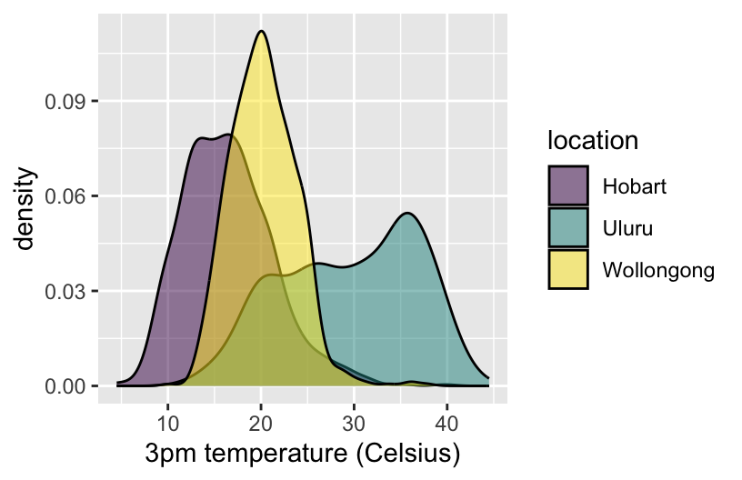

5 activity-07
Learning Goals
- Explore the guiding principles of effective visualizations
Additional Resources
For more information about the topics covered in this chapter, refer to the resources below:
- Equity Awareness for Data Visualizations (html) by Urban Institute
- Telling a story (Chp 29, html) by Wilke
5.1 Warm-up
Recall: Benefits of Visualizations
- Understand what we’re working with:
- scales & typical outcomes
- outliers, i.e. unusual cases
- patterns & relationships
- Refine research questions & inform next steps of our analysis.
- Communicate our findings and tell a story.
No One Right Viz
There is no one right way to visualize a data set, eg, check out the 100 ways used to visualize one dataset: https://100.datavizproject.com/ The visualized data was featured in this TidyTuesday!
Activity: Plot Critique
In groups:
- Scroll through the plots.
- Identify at least 1 plot that you feel illuminates some important aspect of the data.
- Identify at least 1 plot that does NOT illuminate the data in a good way.
Ugly, Bad, Wrong Viz
One way to identify effective viz is to understand what makes a viz ineffective. In the Fundamentals of Data Visualization, Wilke breaks down ineffective viz into 3 categories:
- Wrong
The viz is “objectively incorrect”, as in the numbers / trends being displayed are wrong. - Bad
The viz is “unclear, confusing, overly complicated, or deceiving”. - Ugly
The viz correct and clear but The aesthetics are problematic.
Activity: Critical Analysis
Let’s try some critical analysis on specific examples. For your assigned viz, identify the following:
- The story the viz is trying to communicate.
- Whether the viz is good, ugly, bad, wrong, or some combination.
- Areas for improvement.


Follow-up to Climate Change Plot

Effective & Ineffective Viz Examples
- Examples of good viz:
- Examples of bad viz:
Effective Viz
You can take a whole course in Data Viz at Mac! The topic of effective viz is too big and nuanced to boil down into a simple list. Here are some basics:
Professionalism
Once you’re ready to “share out” your viz, it should have…
- meaningful axis labels
- a figure caption (depending upon where the viz will appear)
Accessibility
Once you’re ready to “share out” your viz, it should…
- have “alt text”, a written description of the viz that can be read out by a screen reader (video)
- use a color palette that is distinguishable across common forms of color blindness
Design Details
In designing your viz, think about comparison. Good viz make it easy for people to perceive things that are similar and things that are different.
Ethics
Michael Correll of Tableau Research (pdf) wrote “Data visualizations have a potentially enormous influence on how data are used to make decisions across all areas of human endeavor.” Thus ethics are critical from the data we use, to the plots we build, to the way in which we communicate this work. This is a very broad topic, and we’ll focus here on data visualization alone. Relatedly, and at a minimum:
- Data viz should not mislead, i.e. “wrong” viz are unethical.**
- Yet ethics in data viz goes much deeper. Correll describes three related principles to strive for:
Visibility
Make the invisible visible. Visualize hidden labor, hidden uncertainty, hidden impacts. Credit your sources, data and otherwise.Privacy
Collect data with empathy. Encourage small Data, anthropomorphize data, obfuscate data to protect privacy.Power
Challenge structures of power. Support data due process, act as data advocates, pressure unethical analytical behavior.
- To this list, Data Feminism authors Catherine D’Ignazio and Lauren F. Klein added:
Emotion & Embodiment
Value multiple forms of knowledge, including the knowledge that comes from people as living, feeling bodies in the world.Pluralism
The most complete knowledge comes from synthesizing multiple perspectivesContext
Data are not neutral or objective
5.2 Exercises
Exercise 1: Professionalism
Let’s examine weather in 3 Australian locations.
The following plot is fine for things like homework or just playing around. But we’ll make it more “professional” looking below.

Part a
Replace A, B, C, and D in the code below to:
- Add a short, but descriptive title. Under 10 words.
- Change the x- and y-axis labels, currently just the names of the variables in the dataset. These should be short and include units.
- Change the legend title to “Location” (just for practice, not because it’s better than “location”).
Part b
When we’re including our plot in an article, paper, book, or other similar outlet, we should (and are expected to) provide a more descriptive figure caption. Typically, this is instead of a title and is more descriptive of what exactly is being plotted.
- Add a figure caption in the top of the chunk.
- Include your x-axis, y-axis, and legend labels from Part a.
- Render your Rmd and check out how the figure caption appears.
ggplot(weather, aes(y = temp3pm, x = temp9am, color = location)) +
geom_point() +
labs(x = "Temperature at 9am (ºC)", y = "Temperature at 3pm (ºC)", color = "Location")
Exercise 2: Accessibility
Let’s now make a graphic more accessible.
ggplot(weather, aes(x = temp3pm, fill = location)) +
geom_density(alpha = 0.5) +
labs(x = "3pm temperature (Celsius)") 
Part a
Let’s add some alt text that can be picked up by screen readers. This is a great resource on writing alt text for data viz. In short, whereas figure captions are quick descriptions which assume that the viz is accessible, alt text is a longer description which assumes the viz is not accessible. Alt text should concisely articulate:
- What your visualization is (e.g. a density plot of 3pm temperatures in Hobart, Uluru, and Wollongong, Australia).
- A 1-sentence description of the most important takeaway.
- A link to your data source if it’s not already in the caption.
Add appropriate alt text at the top of the chunk, in fig-alt. Then knit your Rmd, and hover over the image in your knitted html file to check out the alt text.
ggplot(weather, aes(x = temp3pm, fill = location)) +
geom_density(alpha = 0.5) +
labs(x = "3pm temperature (Celsius)")
Part b
Color is another important accessibility consideration. Let’s check out the color accessibility of our density plot.
- Run the
ggplot()code from Part a in your console. The viz will pop up in the Plots tab. - In the Plots tab, click “Export” then “Save as image”. Save the image somewhere.
- Navigate to https://www.color-blindness.com/coblis-color-blindness-simulator/
- Above the image of crayons (I think it’s crayons?), click “Choose file” and choose the plot file you just saved.
- Click the various simulator buttons (eg: Red-Weak/Protanomaly) to check out how the colors in this plot might appear to others.
- Summarize what you learn. What impact might our color choices have on one’s ability to interpret the viz?
Part c
We can change our color schemes! There are many color-blind friendly palettes in R. In the future, we’ll set a default, more color-blind friendly color theme at the top of our Rmds. We can also do this individually for any plot that uses color. Run the chunks below to explore various options.
ggplot(weather, aes(x = temp3pm, fill = location)) +
geom_density(alpha = 0.5) +
labs(x = "3pm temperature (Celsius)") +
scale_fill_viridis_d() 
# In the color scale line:
# Change "fill" to "color" since we use color in the aes()
# Change "d" (discrete) to "c" (continuous) since maxtemp is on a continuous scale
ggplot(weather, aes(y = temp3pm, x = temp9am, color = maxtemp)) +
geom_point(alpha = 0.5) +
labs(x = "3pm temperature (Celsius)") +
scale_color_viridis_c()
Exercise 3: Ethics
Let’s scratch the surface of ethics in data viz. Central to this discussion is the consideration of impact.
Part a
At a minimum, our data viz should not mislead. Reconsider the climate change example from above. Why is this plot unethical and what impact might it have on policy, public opinion, etc?
Part b
Again, data viz ethical considerations go beyond whether or not a plot is misleading. As described in the warm-up, we need to consider: visibility, privacy, power, emotion & embodiment, pluralism, & context. Depending upon the audience and goals of a data viz, addressing these points might require more nuance. Mainly, the viz tools we’ve learned are a great base or foundation, but aren’t the only approaches to data viz.
Pick one or more of the following examples of data viz to discuss with your group. How do the approaches taken:
- emphasize one or more of: visibility, privacy, power, emotion, embodiment, pluralism, and/or context?
- improve upon what we might be able to convey with a simpler bar chart, scatterplot, etc?
Example: W.E.B. Du Bois (1868–1963)
Du Bois (“Doo Boys”) was a “sociologist, socialist, historian, civil rights activist, Pan-Africanist, author, writer, and editor”1. He was also a pioneer in elevating emotion and embodiment in data visualization. For the Paris World Fair of 1900, Du Bois and his team of students from Atlanta University presented 60 data visualizations of the Black experience in America, less than 50 years after the abolishment of slavery. Du Bois noted: “I wanted to set down its aim and method in some outstanding way which would bring my work to notice by the thinking world.” That is, he wanted to increase the impact of his work by partnering technical visualizations with design that better connects to lived experiences. NOTE: This work uses language common to that time period and addresses the topic of slavery. Check out:
- A complete set of the data visualizations provided by Anthony Starks (@ajstarks).
- An article by Allen Hillery (@AlDatavizguy).
Example: One person’s experience with long COVID
Example: Decolonizing data viz
Example: Visualizing climate change through art
Futures North with Prof John Kim & Mac students (by Prof Kim, Mac research students)
Example: Personal data collection
Part c
For a deeper treatment of similar topics, and more examples, read Data Feminism.
Exercise 4: Critique
Practice critiquing some more complicated data viz listed at Modern Data Science with R, Exercise 2.5.
Think about the following questions:
- What story does the data graphic tell? What is the main message that you take away from it?
- Can the data graphic be described in terms of the Grammar of Graphics (frame, glyphs, aesthetics, facet, scale, guide)? If so, please describe.
- Critique and/or praise the visualization choices made by the designer. Do they work? Are they misleading? Thought-provoking? Are there things that you would have done differently?
Exercise 5: Design Details
This final exercise is just “food for thought”. It’s more of a discussion than an exercise, and gets into some of the finer design details and data viz theory. Go as deep or not deep as you’d like here.
In refining the details of our data viz, Visualize This and Storytelling with Data provide some of their guiding principles. But again, every context is different.
- Put yourself in a reader’s shoes. What parts of the data need explanation?
- Shine a light on your data. Try to remove any “chart junk” that distracts from the data.
- Vary color and style to emphasize the viz elements that are most important to the story you’re telling.
- It is easier to judge length than it is to judge area or angles.
- Be thoughtful about how your categories are ordered for categorical data.
Getting into even more of the nitty gritty, we need to be mindful of what geometric elements and aesthetics we use. The following elements/aesthetics are listed in roughly descending order of human ability to perceive and compare nearby objects:2
- Position
- Length
- Angle
- Direction
- Shape (but only a very few different shapes)
- Area
- Volume
- Shade
- Color. (Color is the most difficult, because it is a 3-dimensional quantity.)
Finally, here are some facts to keep in mind about visual perception from Now You See It.
Part a: Selectivity
Visual perception is selective, and our attention is often drawn to contrasts from the norm.
Implication: We should design visualizations so that the features we want to highlight stand out in contrast from those that are not worth the audience’s attention.
Example: What stands out in this example image? This is originally from C. Ware, Information Visualization: Perception for Design, 2004? Source: S. Few, Now You See It, 2009, p. 33.

Part b: Familiarity
Our eyes are drawn to familiar patterns. We observe what we know and expect.
Implication: Visualizations work best when they display information as patterns that familiar and easy to spot.
Example: Do you notice anything embedded in this rose image from coolbubble.com? Source: S. Few, Now You See It, 2009, p. 34.

Part c: Revisit
Revisit Part b. Do you notice anything in the shadows? Go to https://mac-stat.github.io/images/112/rose2.png for an image.
{kind=link}
Wrapping up
If you finish early:
- Work on homework if not done already
- Complete any activities you haven’t finished yet, eg, spatial viz, the optional but fun exercises in the Multivariate viz and Bivariate viz activities.
- If you’ve done all that, explore some datasets in TidyTuesday.
5.3 Solutions
The exercises today are discussion based. There are no “solutions”. Happy to chat in office hours about any ideas here!